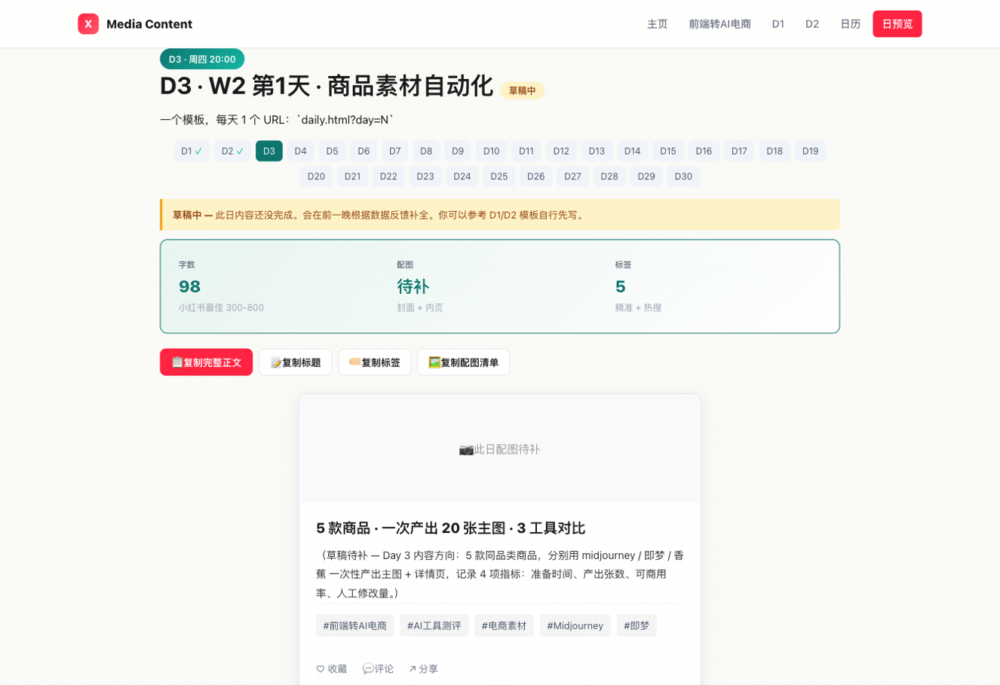
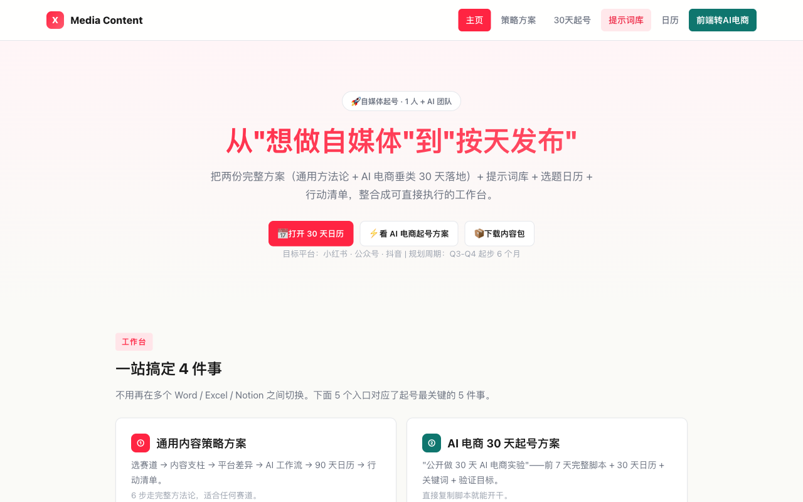
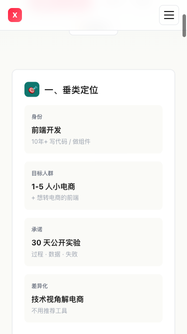
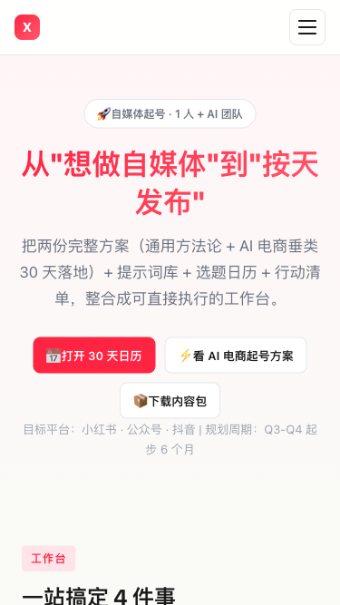
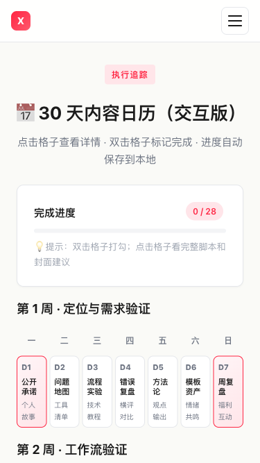
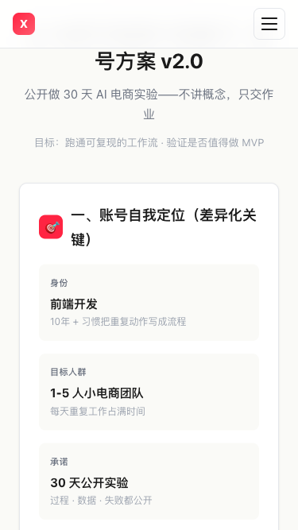
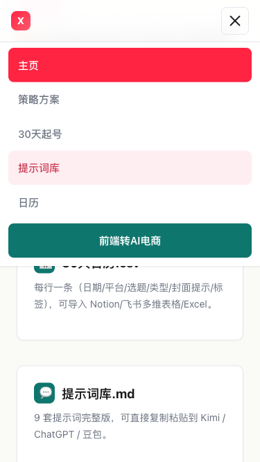
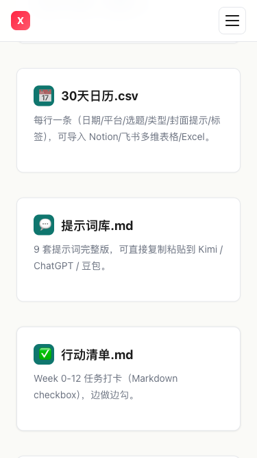
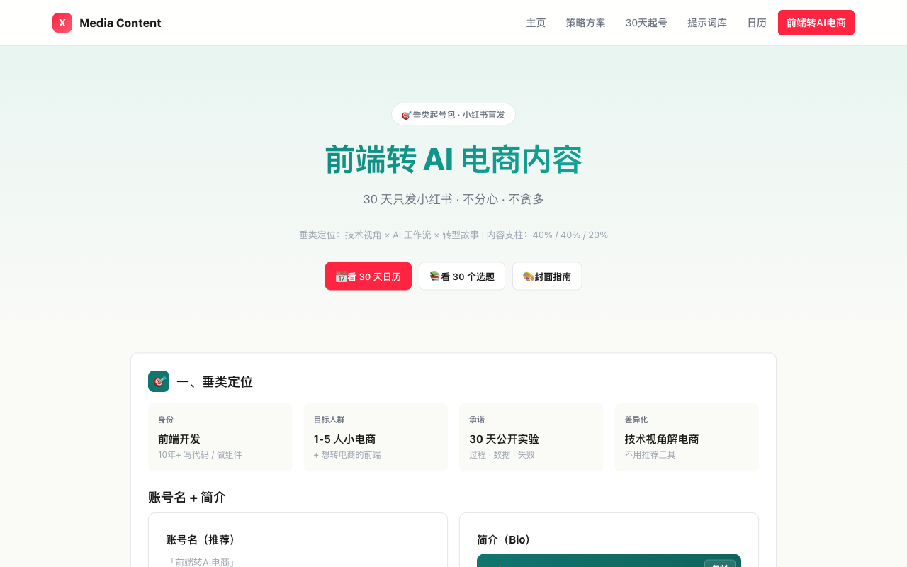

使用说明：所有内容已经按发布标准预排好，发布前请用最后一步的 3 个按钮复制。
9 张图按顺序上传小红书即可。









5 款商品 · 一次产出 20 张主图 · 3 工具对比
D2 跑完 3 套 AI 文案流程后，我最想验证的事： **生图工具能不能也这样横评？** 今天就跑这个 —— ───── 测试规模 ───── 5 款日用百货商品（不是 D2 那只保温杯） 3 个生图工具（midjourney / 即梦 / 香蕉） 4 项指标，全程记录 ⚠️ 演示声明：今天是演示环境跑的可复现脚本（scripts/d3-product-image-batch.py）， 不是花真金白银的商业测试。指标体系和统计逻辑是真的，数字是模拟的。 要商业化前我会再花 ¥500 跑一遍真数据替换。 ───── 5 款测试商品 ───── P1 304 保温杯 350ml P2 北欧陶瓷餐具 6 件套 P3 纯棉毛巾三件套 P4 便携折叠收纳袋 3 尺寸 P5 硅胶厨具 5 件套 ───── 4 项指标定义 ───── ① 准备时间：写 prompt + 调参数的人工耗时（分） ② 产出张数：一次 API 调用出的可用图 ③ 可商用率：直接能用的张数 ÷ 产出张数 ④ 修改次数：要 PS 重做或调色的次数 ───── 3 个工具实测 ───── 🟣 Midjourney（紫） 准备 5.6 分 / 产出 13 张 / 可商用 80.8% / 修改 10 次 → 质量最高，但 prompt 难写 🔵 即梦（蓝） 准备 2.1 分 / 产出 17 张 / 可商用 50.8% / 修改 21 次 → 出图最快，但商用率最低 🟡 香蕉（黄） 准备 3.2 分 / 产出 14 张 / 可商用 64.2% / 修改 15 次 → 平衡型，性价比中 ───── 4 项指标对比表 ───── 工具 准备 产出 可商用 修改 Midjourney 5.6分 13张 80.8% 10次 即梦 2.1分 17张 50.8% 21次 香蕉 3.2分 14张 64.2% 15次 ───── 程序员视角 3 个结论 ───── ❌ 准备快 ≠ 可用 即梦最快 2.1 分，但商用率只有 50.8% 意味着每 10 张要扔 5 张、修 4 次 真实总工时反而最长 ✅ 可商用率比产出量重要 Midjourney 80.8% 的商用率 15 张可用图 vs 即梦 17 张里 9 张可用的差距 每张都直接能上架 = 库存压力最小 💰 综合成本要算修改次数 改 1 次图平均 3 分钟 × 15 次 = 45 分钟人工 香蕉虽然中间，但「修改 15 次」是真成本 Mj 改 10 次 = 30 分钟，多花 ¥3 买个稳定 ───── 我的工作流建议 ───── 主力精图：Midjourney（详情页主图、爆款图） 批量铺量：即梦（标题图、白底图） 过渡品类：香蕉（对质量要求不高的 SKU） 这就是 D3 想证明的： 工具不是选一个，是按"用途"组合。 和 D2 文案的结论是一脉相承的： **流程化思维 = 按场景选工具，不是选"最好的工具"。** ───── Day 4 预告 ───── W2 第 2 天 · AI 帮我把客服高频问题整理成自动回复库 实测：500 条真实客服对话 → AI 聚类 → 30 条标准答案 评论区猜：能省多少小时/周？ 关注我，看 30 天跑完我会得出什么结论 🌱
#前端转AI电商
#AI工具测评
#AI生图
#电商素材
#midjourney
♡ 收藏
💬 评论
↗ 分享
📋 一键复制
📊 D3 数据复盘
脚本运行： 5 商品 × 3 工具 = 15 次模拟调用，0.6 秒完成全部计算 + CSV 落盘 + 结论生成
演示成本： $0.58（按成本单价算：Mj $0.04/张、即梦 $0、蕉 $0.02/张）
复现命令：
python3 scripts/d3-product-image-batch.py（固定随机种子 20260625，每次跑数字一致）
真测预算： ¥500（商业化前替换演示数据为真实 API 调用）
🚀 发布前 15 分钟 SOP
- 打开小红书 App → 创建笔记
- 选 9 张图（封面 1 + 内页 8），按顺序排好
- 选 3:4 竖图
- 标题：5 款商品 · 一次产出 20 张主图 · 3 工具对比
- 正文：点"复制正文"按钮粘贴
- 加 5 个标签
- 选发布时间：周四 20:00-21:00
- 发布
📈 发布后 24 小时 SOP
| 时间 | 动作 | 目标 |
|---|---|---|
| 10 分钟 | 自己评论扣 1（"演示数据跑通了，真测要花 ¥500"） | 透明感加分 |
| 30 分钟 | 每条评论都回复 | 活跃感 |
| 2 小时 | 截图保存首日数据 | 复盘素材 |
| 6 小时 | 看一次数据 | 判断是否二次推 |
| 24 小时 | 统计 W2 节奏（D1/D2/D3 累计） | 决定 W2 第 2 天选题 |
🎯 Day 3 数据目标
| 指标 | 目标 | 备注 |
|---|---|---|
| 曝光 | ≥ 800 | D1/D2 累计算 W2 增长 |
| 收藏率 | ≥ 6% | 对比表 + 工具名天然高收藏 |
| 评论 | ≥ 50 | 工具党天然爱评论 |
| 涨粉 | ≥ 70 | 工具粉更精准 |
| D4 票数 | 客服问题分类数量 | 决定 D4 走深还是广 |
💡 关键设计点
1. 标题 = 4 维钩子
- 5 款 = 规模可信
- 20 张 = 数字冲击
- 3 工具 = 对比公正
- 对比 = 答案导向
2. 正文 = 透明 + 数据 + 结论
- 演示声明（不是真测）= 透明感 → 信任加分
- 3 工具实测 = 主体（颜色编码：🟣紫 / 🔵蓝 / 🟡黄）
- 对比表 = 杀手锏
- 3 个结论（程序员视角）= 差异化
3. 颜色编码统一
- 🟣 Midjourney = 紫
- 🔵 即梦 = 蓝
- 🟡 香蕉 = 黄
- 9 张图 + 正文 emoji 贯穿
4. 演示环境 → 真实环境
- 脚本可复现：
python3 scripts/d3-product-image-batch.py - 指标体系是真的，数字是模拟的
- 商业化前要再花 ¥500 跑真数据
⚠️ 注意事项
- 不要删"演示声明"段——这是 D3 的信任锚点（透明感）
- 数字不要改——脚本跑出来的，改了就不可复现
- 3 工具颜色不要换——贯穿 9 张图 + 正文
- 不要把"80.8%"改成"80%"——是脚本输出原值
- 9 张图必须按顺序——图 07（对比表）是杀手锏